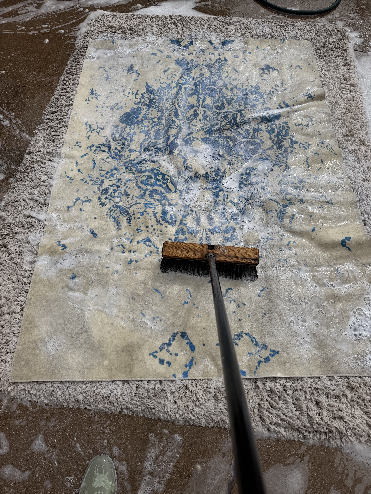
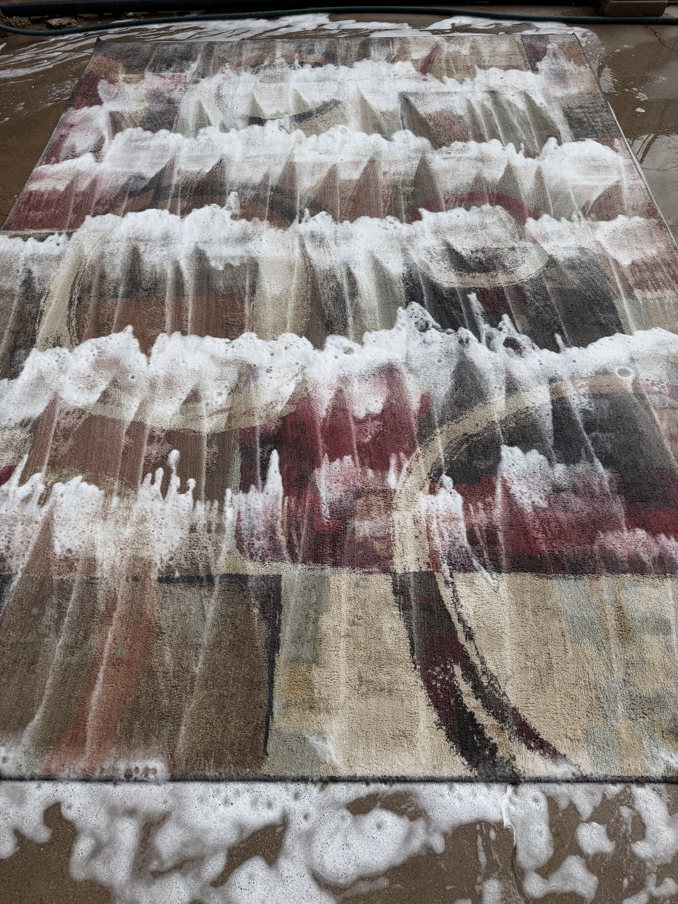
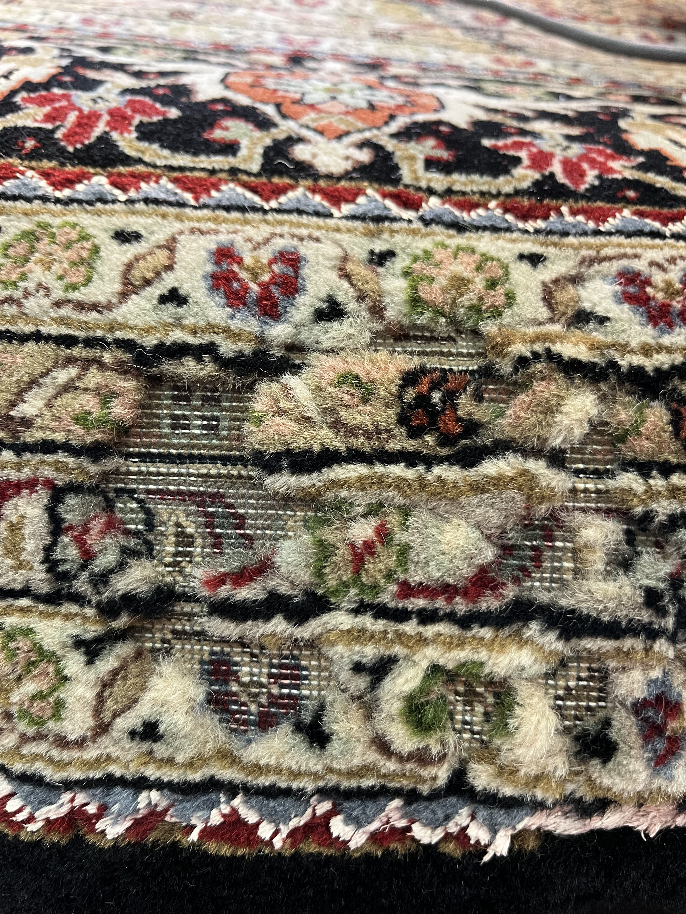
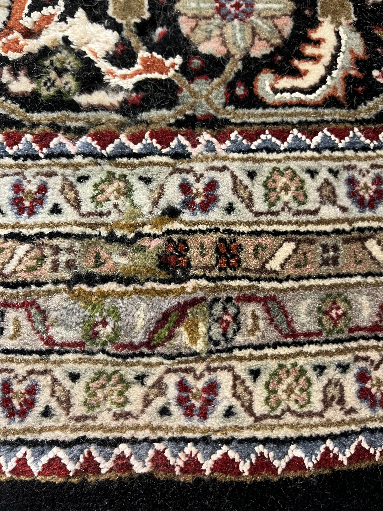
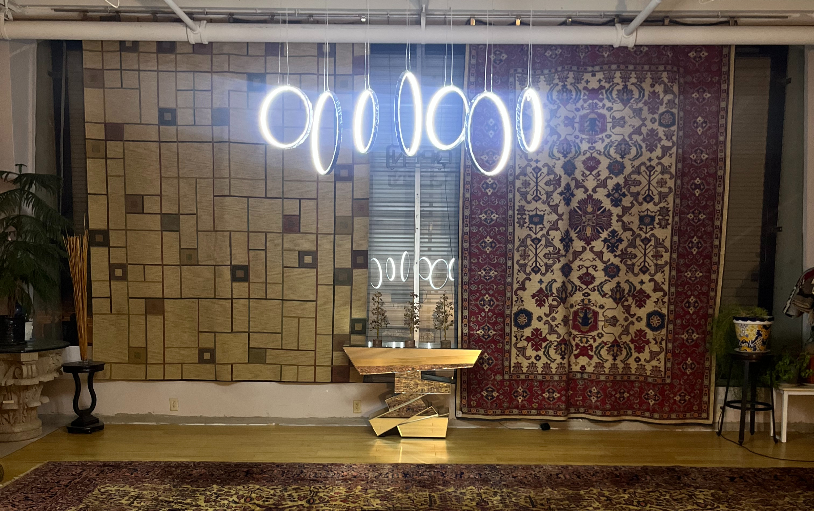

OUR SERVICES
Expertise beyond the gallery.
From professional rug cleaning and restoration to appraisals and finding the right rug, Torange Rug Gallery provides knowledgeable care for rugs at every stage of their life.
RUG CLEANING
Careful cleaning for the rugs you value.
Rugs collect dust, soil, and everyday wear over time. Professional cleaning helps refresh their appearance while preserving the fibers, colors, and character that make each rug unique.
At Torange Rug Gallery, each rug is treated individually with attention to its construction, material, and condition.
Ask about rug cleaning

RUG RESTORATION
Preserve the character of your rug.
Damage does not always mean the end of a treasured rug. Skilled restoration can address worn and damaged areas while respecting the original design and character of the piece.


RUG APPRAISALS
Understand what you own.
Whether you have inherited a rug, are considering a purchase or sale, or simply want to learn more about a piece you already own, we can help you better understand your rug.
Contact Torange Rug Gallery to discuss an appraisal and the information available about your piece.
Ask About an AppraisalRUG SALES
Find a rug for your space.
Our gallery brings together rugs selected for their craftsmanship, design, and character, from traditional pieces to contemporary designs.
Browse our collection online or visit Torange Rug Gallery to see our rugs in person.
Explore the Gallery
TORANGE RUG GALLERY
How can we help with your rug?
Contact us to discuss cleaning, restoration, appraisals, or finding a rug for your space.